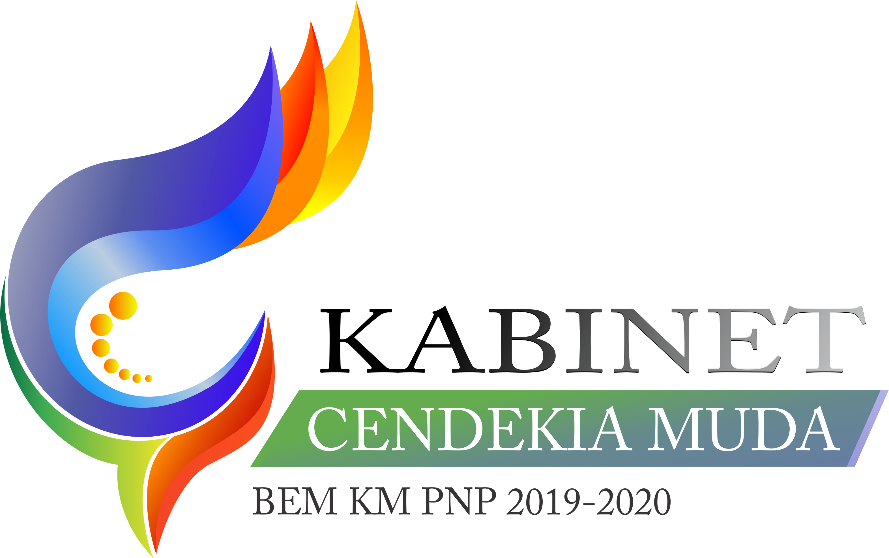

Badan Eksekutif Mahasiswa (disingkat BEM) adalah organisasi mahasiswa intra kampus yang merupakan lembaga eksekutif di tingkat pendidikan tinggi. Dalam melaksanakan program-programnya, umumnya BEM memiliki beberapa kementerian dan departemen.
Berbeda dengan himpunan mahasiswa di setiap jurusan, cakupan atau ruang lingkup Badan Eksekutif Mahasiswa bisa lebih luas mencakup satu fakultas atau satu perguruan tinggi. Dalam hal ini Badan Eksekutif Mahasiswa mengadaptasi eksekutif dalam pemerintahan yang bertanggung jawab untuk menerapkan hukum atau kebijakan lainnya yang berlaku pada suatu fakultas atau pun pada suatu perguruan tinggi.
Politeknik Negeri Padang juga memiliki BEM dengan nama kabinet Cendekia Muda tahun 2019/2020.

Visi
Menjadikan kampus Politeknik Negeri Padang menjadi kampus yang cerdas dan profesional menuju Politeknik TOP FIVE serta menjadikan kampus Politeknik Negeri Padang sebagai kiblat bagi kampus lainnya.
Misi
Menyumbangkan potensi bakat mahasiswa Politeknik Negeri Padang melalui program-program organisasi mahasiswa.
Melakukan gerak kritis berbasis kajian media masa.
Meningkatkan aksi nyata untuk masyarakat secara umum dan masyarakat Kota Padang secara khusus.
Meningkatkan kolaborasi, komunikasi, dan hubungan baik antar elemen mahasiswa dan civitas akademika.
Mendukung semua kegiatan-kegiatan positif baik akademis dan non-akademis mahasiswa menuju Politeknik Negeri Padang menjadi TOP FIVE OF POLYTECHNIC di Indonesia.